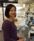
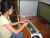
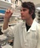
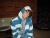
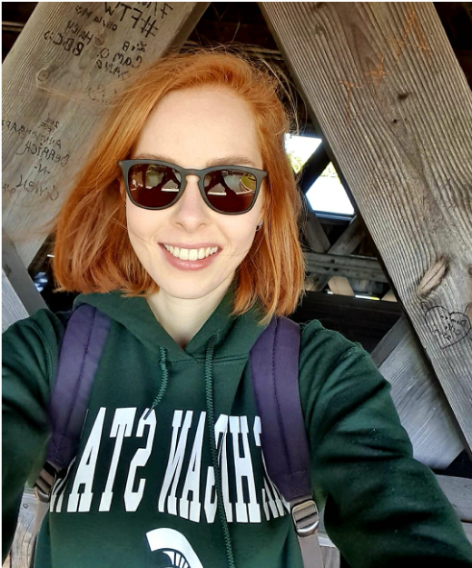
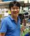
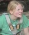

|
Zing Tsung-Yeh Tsai (2014-16) |
Bioinformatics scientist, Illumina Inc. |
|  |
Ming Jung Liu (2013-16) |
Assistant Research Fellow, Academia Sinica |
|  |
Kelian Sun (2009-11) |
Reseach associate, Marc Basson Lab, MSU |
| |
Cheng Zou (2006-11) |
Postdoctoral Associate, Institute of Biotech, Cornell University |
| |
Kousuke Hanada (2006-07) |
Associate Professor, Kyushu Institute of Technology, Fukuoka, Japan |
| |
Siobhan Cusack (2017-20) PhD, Cell Mol. Biology |
- |
| |
Bethany Moore (2014-19) PhD, Plant Biology |
Postdoctoral associate, University of Wisconsin-Madison |
| |
Christina Azodi (2014-19) PhD, Plant Biology |
Postdoctoral associate, University of melbourne |
| |
Nicholas Panchy (2011-17) PhD, Genetics |
Postdoctoral associate, Natl. Inst. Math. Biol. Syn., University of Tennessee |
| |
Johnny Lloyd (2012-17) PhD, Plant Biology |
Postdoctoral associate, University of Michigan |
| |
Sahra Uygun (2011-17) PhD, Genetics |
Bioinformatic scientist, Agendia Inc. |
| |
Alex Seddon (undergrad: 2009-11, grad: 2013-15) MS, Plant Biology |
Course manager, College of Ved. Med., MSU |
| |
Gaurav Moghe (2007-13) PhD, Genetics/QB |
Assistant Professor, Cornell University |
| |
Guangxi Wu (2009-13) PhD, CMB |
Scientist, Zymo Research Inc. |
| |
Shan Yin (2008-10) |
MS, Plant Biology |
| |
Traverse Cottrell (2019-20) |
Plant Biology |
| |
Paityn Donaldson (2017-19) |
Mol Gen/Genom, Pharm |
| |
Lizzie Gibbons (2018-19) |
Plant Biology |
| |
Dante Poe (2016-19) |
Biotech & Mol Bio |
|
Melissa Baxter (2016-17) |
Plant Biology |
|  |
Sebastian Stankiewicz (2013-16) |
Packaging |
|
Eamon Winship (2015-16) |
Biochem. & Mol. Biol. |
| |
Mark Gomulinski (2013-15) |
Psychology |
 |
Jennifer Liu (2012-13) |
English/Business |
 |
David Hufnagel (2011-13) |
Biological Sciences |
 |
Benjamin Wolf (2010-11) |
Plant Biology |
|
Stephanie Plotas (2009-13) |
Interdisc. studies in Arts |
|
Jordan Boniface (2008-09) |
Pre-veterinary/Animal Science |
 |
Josh Mackaluso (2008-10) |
Biochemistry/Computer Science |
| |
Jessica Anne Oswald (2007-08) |
Zoology |
|
Amanda Tabbert (2007-10) |
Teacher Education |
|
Emily Eckenrode (2006-07) |
Animal Science |
|
Emily Bolger (2019) |
Mathematics, Moravian College |
|
Ketan Jog (2019) |
Data Science, Columbia University |
 |
Aaron Lee (2018) |
Biology, College of New Jersey |
 |
Michael Douglas (2017) |
Adrian College |
 |
Rosalie Sowers (2016) |
Pennsylvania State University |
| |
Matt Simenc (2013) |
Humboldt State University |
 |
Michael Veling (2011) |
University of Massachusetts at Amherst |
|
Kai Ruan (2009) |
University of Michigan, Ann Arbor |
| |
Elizabeth Wright (2009, 2010) |
Jackson State University |
|  |
Ted Cybulski (2008) |
Massachusetts Institute of Technology |
 |
Juyeon Park (2007) |
Williams College |
 |
Jeffrey Fishman (2017) |
Upper Dublin High School, Washington, PA |
|
Rachel Groberman (2015) |
Los Angeles Center for Enriched Studies, Los Angeles, CA |
|
Hannah Jasicki (2013) |
La Porte High School, La Porte, IN |
 |
Manali Naik (2010) |
Monta Vista High school, Cupertino, CA |
| |
Meiyi Cheng (2008 |
Punahou High School, Punahou, Hawaii |
| |
Andy Lin (2008-2009) |
Okemos High School, Okemos, MI |
|
Tanmay Prakash (2006) |
Novi High School, Novi, MI |
|  |
Patricia Blum (2020) |
Undergraduate student, Heinrich Heine University, Duesseldorf, Germany |
|
Joseph Yayen (2020) |
Graduate student, Academia Sinica, Taiwan |
|
Liang Xu (2017-19) |
Associate Professor, Nanjing Agricultural University, Nanjing, China |
|  |
Wen-Yu Liu (2016-17) |
Postdoctoral Associate, Academia Sinica, Taipei, Taiwan |
|
Kun-Ting Hsieh (2016-17) |
Graduate Student, National Chung Hsing University, Taichung City, Taiwan |
| |
Birte Schwarz (2016) |
Graduate Student, Heinrich Heine University, Duesseldorf, Germany |
| |
Daniel Hartleb (2014) |
Graduate Student, Heinrich Heine University, Duesseldorf, Germany |
 |
Sarah Richards (2014) |
Graduate Student, Heinrich Heine University, Duesseldorf, Germany |
|  |
Janina Maß (2013) |
Graduate Student, Heinrich Heine University, Duesseldorf, Germany |
 |
Alisandra Denton (2013) |
Graduate Student, Heinrich Heine University, Duesseldorf, Germany |
 |
Yi Lee (2010-11) |
Professor, Chungbuk National University, South Korea |
|
Chung-Shien Wu (2006) |
Graduate Student, Forestry, National Taiwan University |
|
Sugaleshini Subramanian (2006-07) |
Bioinformatics Research Institute, Chennai, India |